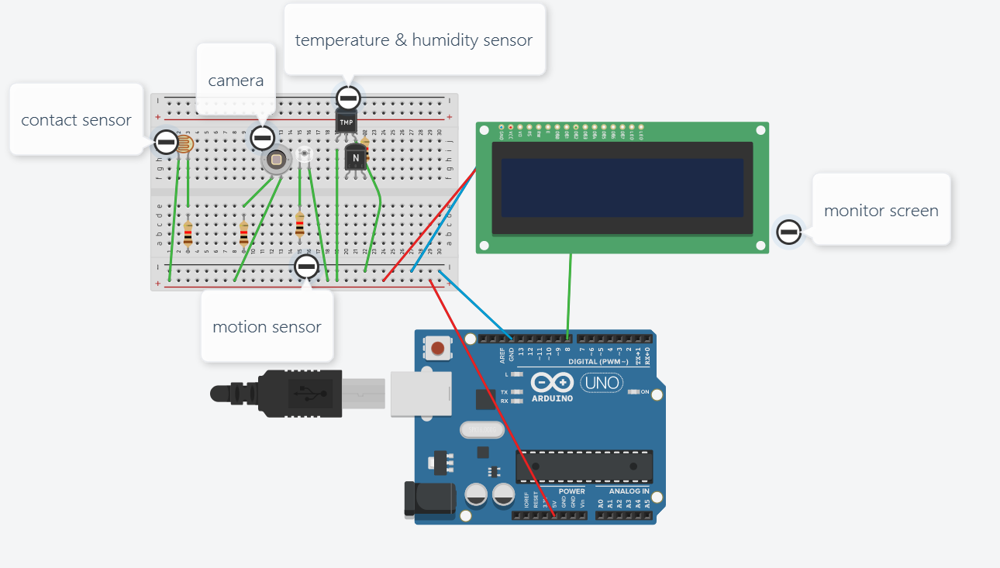

Team Project Idea
Smart Fridge
Eliminating food waste from the source.
Combining all our project ideas from assignment 1, our group came up with the project idea of a smart refrigerator. The motivation of this project came from the problem of food waste around the globe. Food waste is a huge problem for both developed and developing countries. One of the ways that food is wasted in households is that families buy more food than they can consume within its expiration duration. This smart fridge aims to alleviate this root cause.
The main function of the smart fridge is detecting different food that is put into the fridge. The fridge can detect different information about the food such as which kind of food (meat, vegetable etc.), its expiration date, whether it is cooked or raw, and other information. The fridge can do this by making use of computer vision systems and biometrics sensors. By placing cameras inside the fridge, the fridge can collect images of the food that are placed inside the fridge. An AI algorithm can analyze the images and provide information like what kinds of food it is. Biometrics sensors that are placed inside the fridge work in the same way, they collect data such as chemicals being released by the food inside the fridge. The AI algorithm can then analyze this data to provide information such as whether some fruits are ripe based on the amount of ethylene being detected inside the fridge. The user of the fridge is not required to perform any other actions than what they are already doing, such as putting the food in their fridge. The fridge is connected to an app that display the information that the fridge has gathered. In addition, it could inform the temperature and humidity inside of the refrigerator by using temperature and humidity sensor which will be placed inside. The app also provides more functions that help the users manage their food such as reminding them some usual food, like eggs or milk, has run out, or suggesting meals that can be cooked some soon-to-be-expired food. It will help user to shop in the market because this product has camera and motion sensor which could take snapshot when the user wants through the app.
The main technological fields that this project is related to is Internet of Things and AI. The fridge and the app are connected to each other to create a system that help the user manage food. AI is necessary to make it possible that the fridge knows what kind of food is put into it, or what meals can be made from available ingredients.
It is also interesting to note that big consumer appliance companies such as Samsung and LG had made such fridges before, but all of them were commercial failures. It would be interesting for us to learn more about these products and learn why they failed, and what can be improved if our project were to be a commercial product.
A prototype of this fridge that is suitable for our team technical skill levels can be a IoT box that can detect if something is put inside it (simulating the function of the fridge detecting some food is put inside it). Another prototype we may make is the companion app user interface. This prototype app can display information about some food.